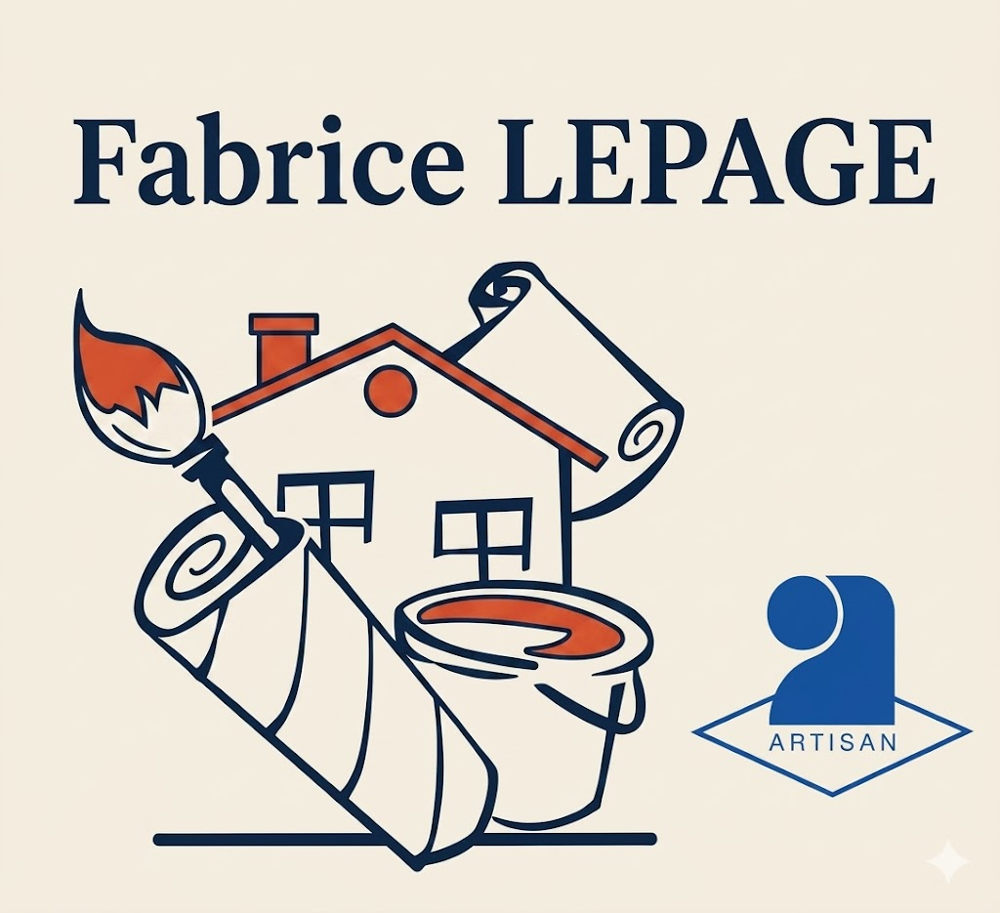

Peintre en bâtiment à La Selle-en-Hermoy – Entreprise Lepage Fabrice
Artisan indépendant avec plus de 30 ans de métier, Fabrice Lepage met tout son savoir-faire entre vos mains : peinture intérieure, ravalement de façade, décoration et rénovation. Un travail soigné, réalisé à la main, à Montargis, Château-Renard, Ferrières-en-Gâtinais, Amilly et dans tout le Loiret (45).
Un artisan qui réalise lui-même chaque chantier dans le Loiret
Fabrice Lepage intervient en personne sur chaque chantier, de la peinture intérieure au ravalement de façade. Pas de sous-traitance : un seul artisan, son savoir-faire de plus de 30 ans, et l'exigence du travail bien fait à La Selle-en-Hermoy et dans un rayon de 30 km dans le 45.
Peinture intérieure
Murs, plafonds, boiseries, plinthes. Finitions impeccables pour sublimer chaque pièce de votre logement à La Selle-en-Hermoy et alentours.
En savoir plusRavalement de façade
Nettoyage, réparation des fissures et peinture de façade. Protégez et embellissez l'extérieur de votre maison dans le Loiret.
En savoir plusDécoration intérieure
Papier peint, enduits décoratifs, effets matières, peintures tendance. Créez l'ambiance qui vous ressemble dans votre intérieur.
En savoir plusRénovation
Rénovation complète de logements anciens, remise en état, préparation de surfaces. Travaux intérieur et extérieur soignés.
En savoir plus30 ans de métier, l'exigence d'un vrai artisan
Savoir-faire & finitions impeccables
Chaque geste compte : préparation rigoureuse des supports, choix des bons matériaux, finitions au détail. Le soin d'un artisan passionné par son métier depuis plus de 30 ans.
Respect des délais
Intervention planifiée et suivi de chantier jusqu'à la réception. Votre projet est livré dans les délais convenus, sans mauvaise surprise.
Tarifs transparents
Devis détaillé et gratuit, sans engagement. Des prix compétitifs pour les particuliers et professionnels de tout le Loiret.
Artisan local & ancré dans son territoire
Basé à La Selle-en-Hermoy depuis plus de 30 ans, Fabrice connaît son terrain et ses clients. Un artisan de proximité, réactif, disponible pour chaque projet grand ou petit.

Des chantiers réalisés avec soin dans le Loiret
 Intérieur
Intérieur
Rénovation salon – Poutres & murs
Peinture poutres en blanc, murs et boiseries laquées
 Toiture
Toiture
Nettoyage toiture anti-mousse – Loiret
Lavage haute pression et traitement anti-mousse
 Intérieur
Intérieur
Peinture cuisine + meubles compris
Meubles rustiques relookés en blanc satin
Besoin d'un peintre à La Selle-en-Hermoy ou dans le Loiret ?
Contactez-nous pour un devis gratuit et sans engagement. Réponse assurée sous 48 h.
Intervention dans un rayon de 30 km autour de La Selle-en-Hermoy
Artisan peintre basé à La Selle-en-Hermoy (45210), l'Entreprise Lepage Fabrice intervient régulièrement dans les communes voisines :